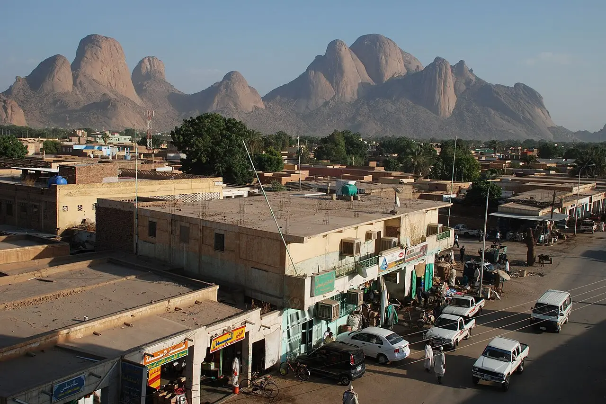
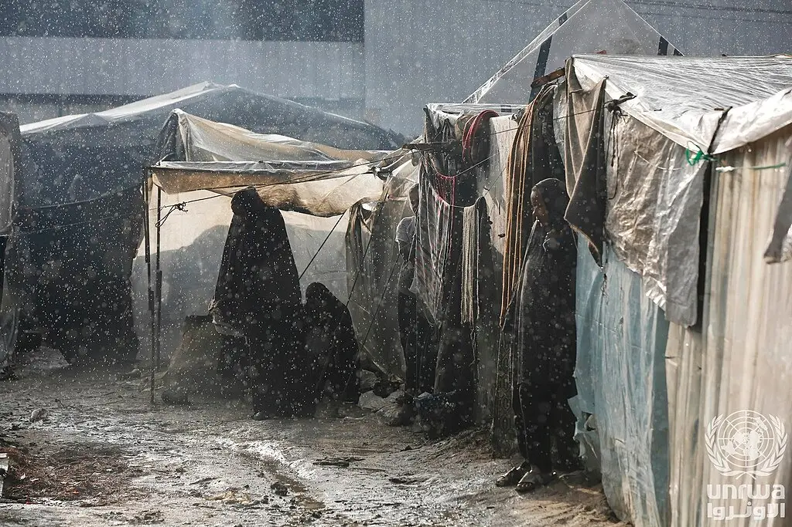
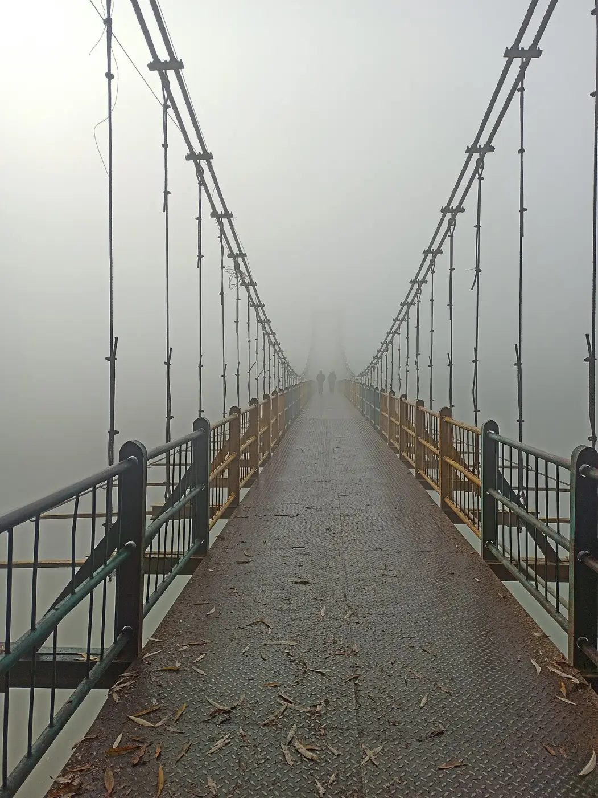
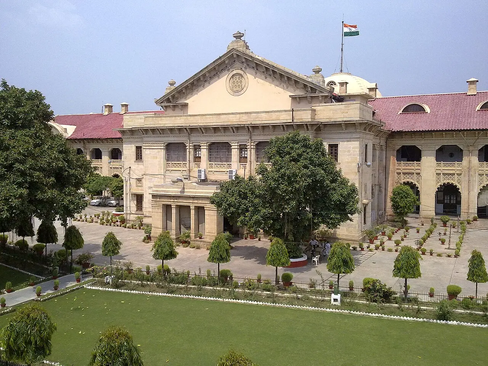
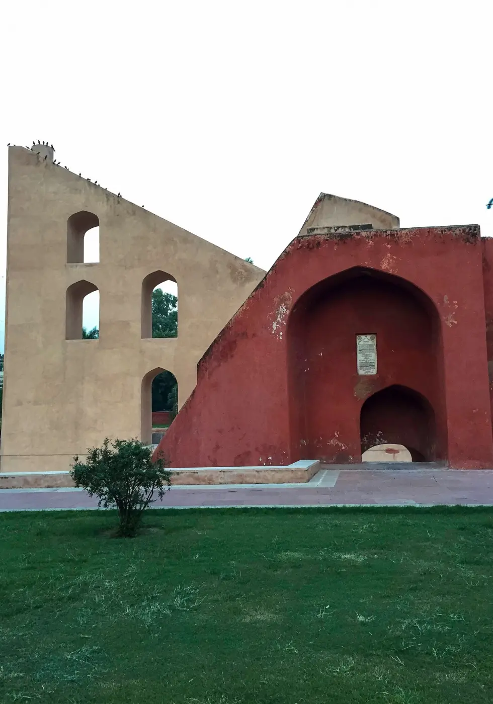
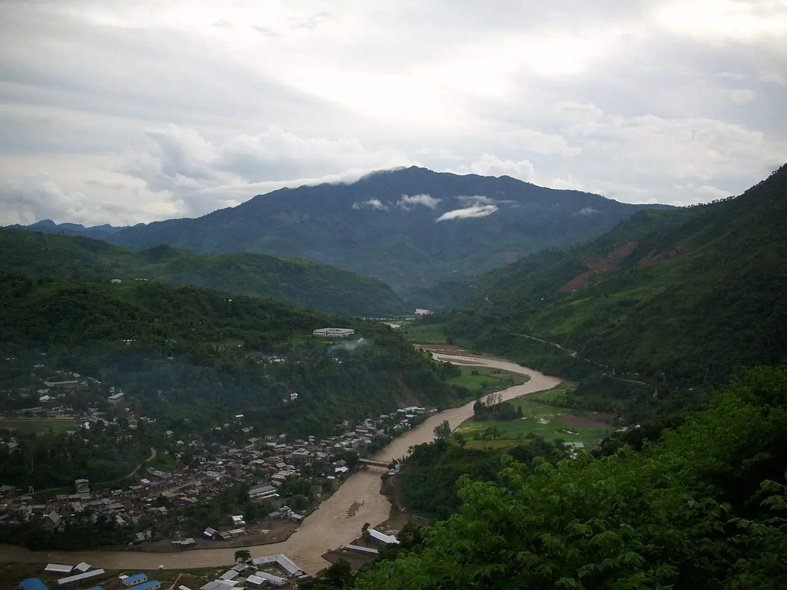
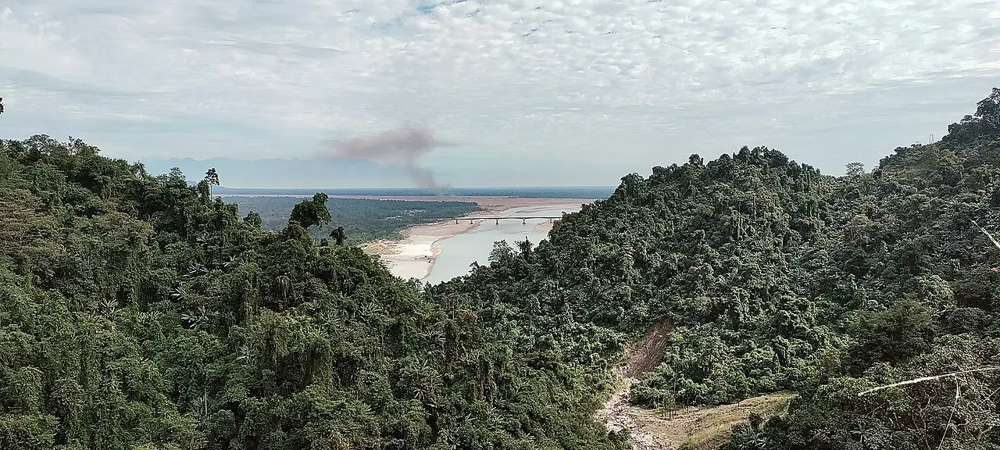
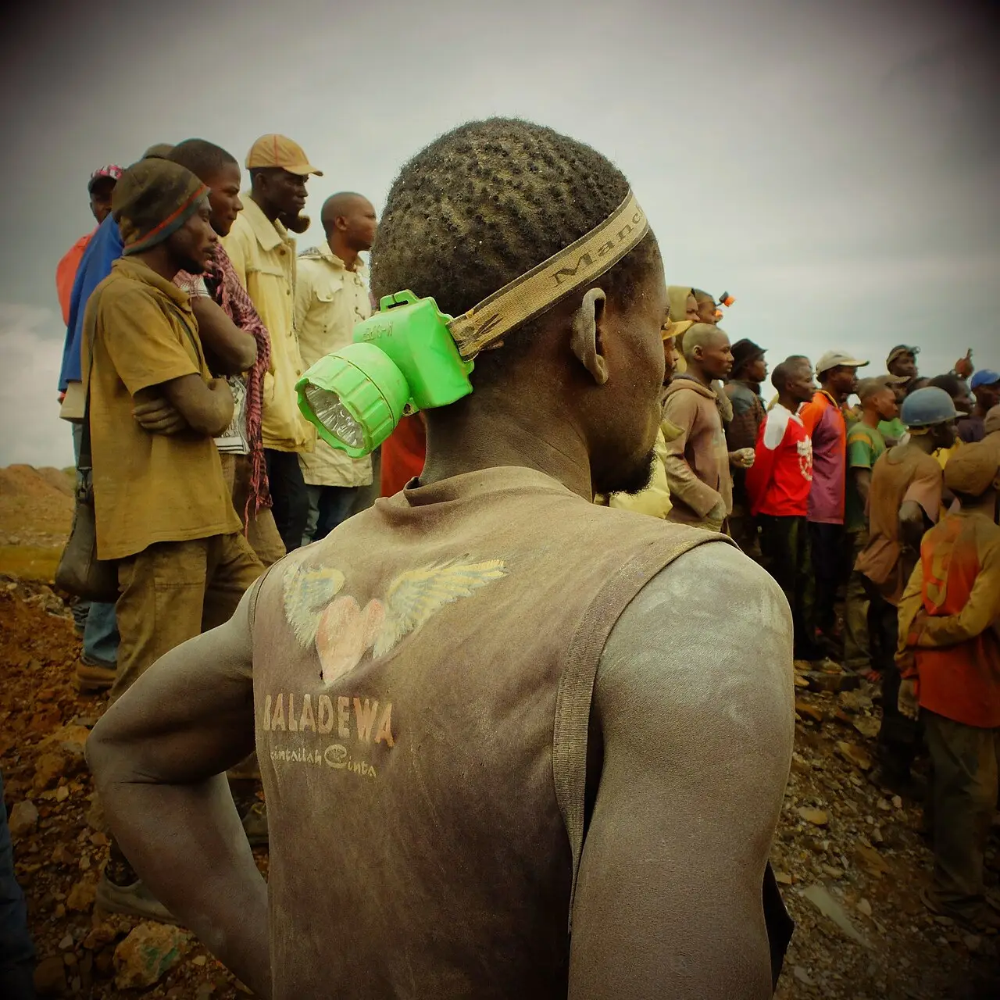
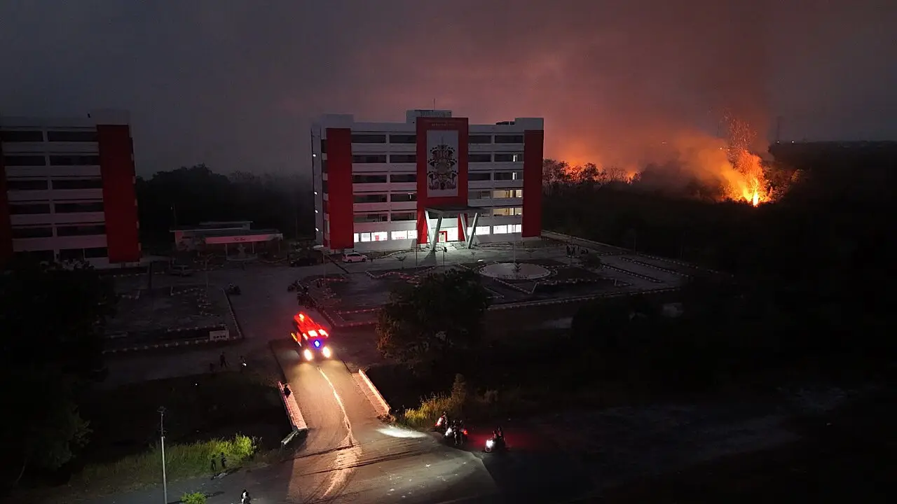

Lawyer: army should not hold ICC suspect Haroun

Two still missing after Gaza tent landslide

Baramulla men acquitted after six years under UAPA

Court orders FIR against officer over arrest papers
Umar Khalid, Sharjeel Imam seek Supreme Court bail

No protest request accepted since Jantar Mantar closed

Kangpokpi shutdown over killing of two Kuki men

Four Siang dam protesters freed after 29 days

Congo police detain over 500 at Kambove mine
No updates yet

Tear gas at Jakarta protest over graft, fires
X says 'imposter' sent account takedown notices
Follow a thread to keep it here.